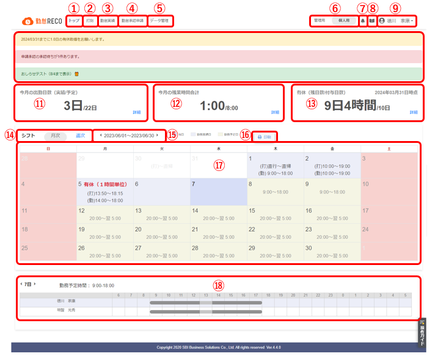
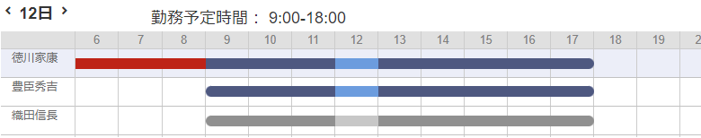

トップ画面について
トップ画面について説明します。

-
トップ
トップ画面を表示します。
-
打刻
打刻画面を表示し、出勤/退勤を打刻します。
詳しくは、「打刻する」を参照してください。
-
勤怠実績
勤怠実績画面を表示し、月間の勤怠実績や予定を閲覧できます。
勤怠時間の修正や日報の入力もできます。
詳しくは、「勤怠実績を修正・確認する」・「日報やプロジェクト別工数を入力する」を参照してください。
-
勤怠承認申請
勤怠関連の申請画面を表示します。
※設定によっては表示されない場合があります。詳しくは、「 休暇や残業などを申請する」を参照してください。
-
データ管理
「工数実績一覧」画面を表示したり、「日報データCSV出力」画面を表示したりします。
詳しくは、「工数実績一覧表を作成する」・「プロジェクト別工数を出力する」を参照してください。
-
管理用/個人用切り替え
管理者用画面、個人用画面を切り替えます。
※一般ユーザー権限では、「個人用」メニューのみご利用いただけます。
（「管理用」「個人用」の切り替えのためのボタンは表示されません） -
勤怠RECO事務局（※SBIビジネス・ソリューションズ株式会社）からのメンテナンスやバージョンアップ等のお知らせが表示されます。
-
個人用・管理用マニュアルを閲覧できます。
-
ユーザー
パスワードの変更やログアウトができます。
-
通知
各種通知メッセージが表示されます。
-
今月の出勤日数
当月の出勤実績日数と、出勤予定日数を表示しています。
［詳細］をクリックすると、勤怠実績画面が表示され、出退勤時刻や休暇取得状況などを確認できます。
詳しくは、「勤怠実績を確認する」を参照してください。
-
今月の残業時間合計
当月の残業時間の合計と1カ月の法定残業時間を表示しています。
残業時間の合計が法定残業時間に近づくと黄色、超えると赤色で表示されます。
［詳細］をクリックすると、月別残業時間が表示されます。
詳しくは、「月別残業時間を確認する」を参照してください。
-
有休（残日数/付与日数）
今年度末の締日時点での、有給休暇の残り日数と付与されている日数を表示しています。
［詳細］をクリックすると、休暇取得状況が一覧で表示されます。代休、振替休日、特別休暇の取得状況も確認できます。
詳しくは、「休暇取得状況を確認する」を参照してください。
-
月次/週次切り替え
トップ画面に表示するカレンダーを、月間表示または週間表示に切り替えます。
-
年月日
表示したいカレンダーの期間を変更します。
年月日の左右にある［＜］または［＞］をクリックすると、カレンダーの表示期間を変更します。
-
印刷
カレンダーを印刷します。
-
カレンダー
勤務状況が確認できます。
休暇取得や中抜けを行った場合は、取得日に赤文字で表示されます。
カレンダーの過去日には勤怠実績、未来日には勤務予定の時刻が表示されます。
（勤怠実績には、管理用メニューの共通マスタの設定により、勤務時間、打刻時間のいずれかまたは両方が表示されます。）
直行直帰を申請した場合は、打刻時間の代わりに「直行」や「直帰」と表示されます。
-
シフトテーブル
-
「シフトテーブル表示」のリンクをクリックすると、同じ部課の1日分のシフトを表示します。1日分のシフトには、その日に予定された勤務開始時間の3時間前より、24時間分を表示します。
休日で、その日に勤務していない場合は、0時から24時間分を表示します。
シフトテーブルの上部には勤務予定時間が表示されます。

グレー：予定、不就労
青：実績
赤：残業
色の薄い部分：休憩時間
※中抜け時間は、休憩時間に含まない設定の場合は不就労、休憩時間に含む設定の場合は休憩時間として表示されます。
-
日付の左右にある［＜］または［＞］をクリックすると、シフト表示日を変更します。
-
ヒント |
|
|---|